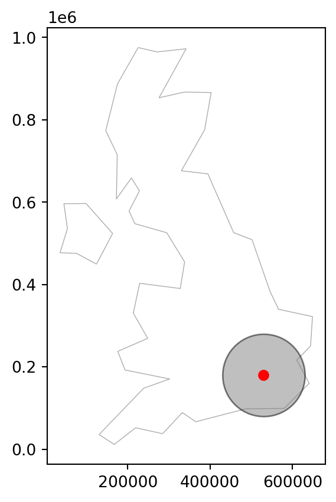
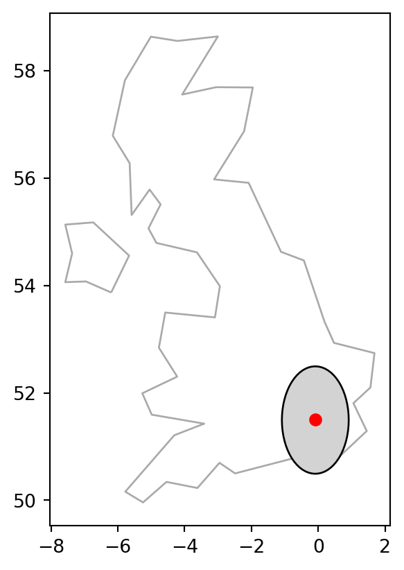
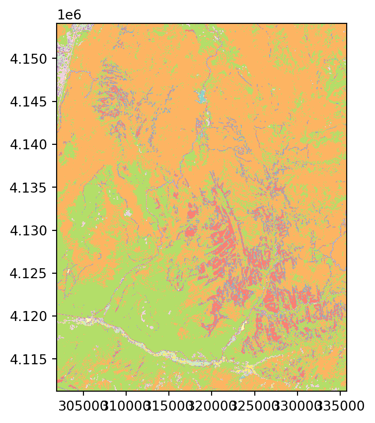
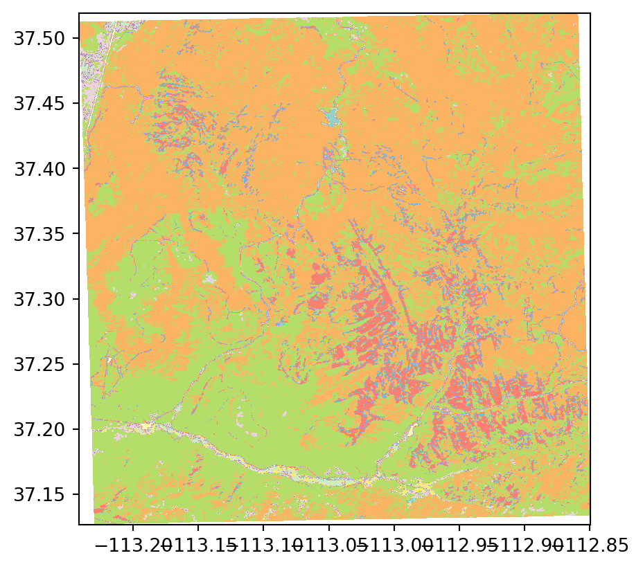
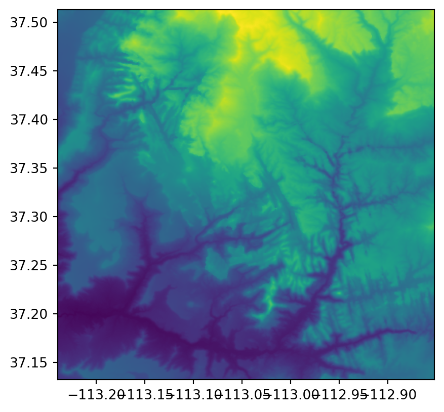
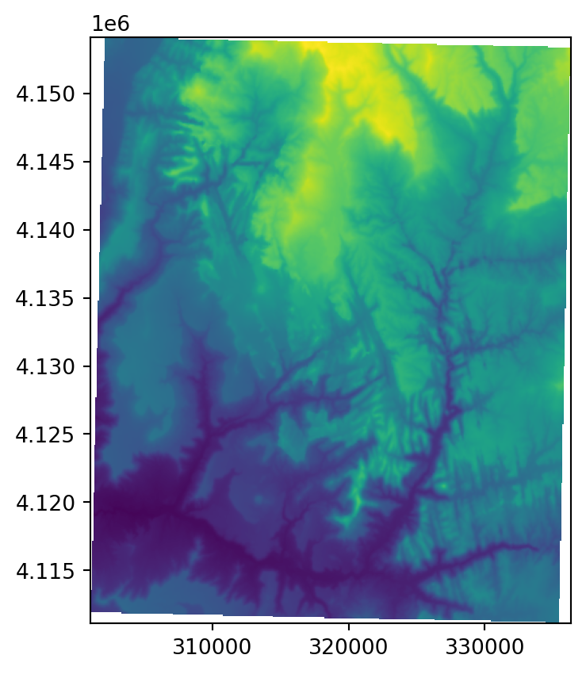
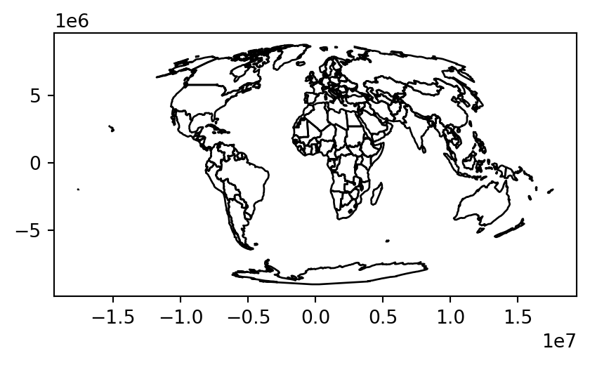
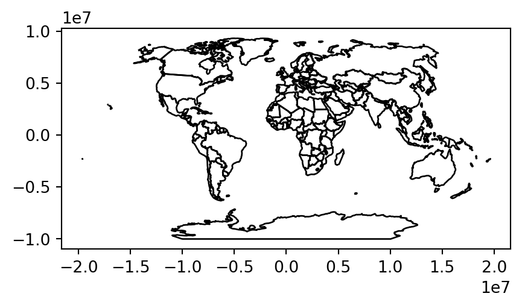
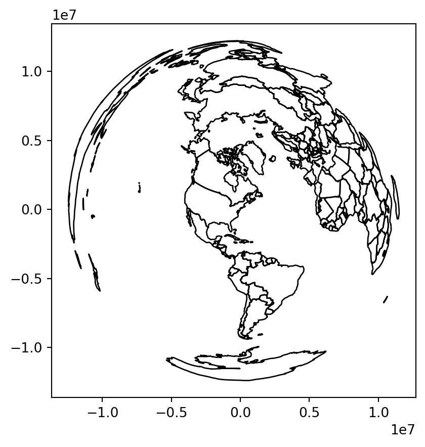

import matplotlib.pyplot as plt
import numpy as np
import shapely
import geopandas as gpd
import rasterio
import rasterio.warp
import rasterio.plot
import pyproj
import shutil
import math6 Reprojecting geographic data
6.1 Prerequisites
Let’s import the required packages:
and load the sample data:
src_srtm = rasterio.open('data/srtm.tif')
src_nlcd = rasterio.open('data/nlcd.tif')
zion = gpd.read_file('data/zion.gpkg')
world = gpd.read_file('data/world.gpkg')
cycle_hire_osm = gpd.read_file('data/cycle_hire_osm.gpkg')6.2 Introduction
sec-coordinate-reference-systems introduced coordinate reference systems (CRSs), with a focus on the two major types: geographic (‘lon/lat’, with units in degrees longitude and latitude) and projected (typically with units of meters from a datum) coordinate systems. This chapter builds on that knowledge and goes further. It demonstrates how to set and transform geographic data from one CRS to another and, furthermore, highlights specific issues that can arise due to ignoring CRSs that you should be aware of, especially if your data is stored with lon/lat coordinates.
In many projects there is no need to worry about, let alone convert between, different CRSs. It is important to know if your data is in a projected or geographic coordinate system, and the consequences of this for geometry operations. However, if you know the CRS of your data and the consequences for geometry operations (covered in the next section), CRSs should just work behind the scenes: people often suddenly need to learn about CRSs when things go wrong. Having a clearly defined project CRS that all project data is in, plus understanding how and why to use different CRSs, can ensure that things don’t go wrong. Furthermore, learning about coordinate systems will deepen your knowledge of geographic datasets and how to use them effectively.
This chapter teaches the fundamentals of CRSs, demonstrates the consequences of using different CRSs (including what can go wrong), and how to “reproject” datasets from one coordinate system to another. In the next section we introduce CRSs in Python, followed by sec-querying-and-setting-coordinate-systems which shows how to get and set CRSs associated with spatial objects. sec-geometry-operations-on-projected-and-unprojected-data demonstrates the importance of knowing what CRS your data is in with reference to a worked example of creating buffers. We tackle questions of when to reproject and which CRS to use in sec-when-to-reproject and sec-which-crs-to-use, respectively. We cover reprojecting vector and raster objects in sec-reprojecting-vector-geometries and sec-reprojecting-raster-geometries and modifying map projections in sec-custom-map-projections.
6.3 Coordinate Reference Systems
Most modern geographic tools that require CRS conversions, including Python packages and desktop GIS software such as QGIS, interface with PROJ, an open source C++ library that “transforms coordinates from one coordinate reference system (CRS) to another”. CRSs can be described in many ways, including the following:
- Simple yet potentially ambiguous statements such as “it’s in lon/lat coordinates”
- Formalized yet now outdated ‘proj4 strings’ such as
+proj=longlat +ellps=WGS84 +datum=WGS84 +no_defs - With an identifying ‘authority:code’ text string such as
EPSG:4326
Each refers to the same thing: the ‘WGS84’ coordinate system that forms the basis of Global Positioning System (GPS) coordinates and many other datasets. But which one is correct?
The short answer is that the third way to identify CRSs is correct: EPSG:4326 is understood by geopandas and rasterio packages covered in this book, plus many other software projects for working with geographic data including QGIS and PROJ. EPSG:4326 is future-proof. Furthermore, although it is machine readable, unlike the proj-string representation EPSG:4326 is short, easy to remember and highly ‘findable’ online (searching for EPSG:4326 yields a dedicated page on the website epsg.io, for example). The more concise identifier 4326 is also understood by geopandas and rasterio, but we recommend the more explicit AUTHORITY:CODE representation to prevent ambiguity and to provide context.
The longer answer is that none of the three descriptions are sufficient, and more detail is needed for unambiguous CRS handling and transformations: due to the complexity of CRSs, it is not possible to capture all relevant information about them in such short text strings. For this reason, the Open Geospatial Consortium (OGC, which also developed the simple features specification that the geopandas package implements) developed an open standard format for describing CRSs that is called WKT (Well Known Text). This is detailed in a 100+ page document that “defines the structure and content of a text string implementation of the abstract model for coordinate reference systems described in ISO 19111:2019” (Open Geospatial Consortium 2019). The WKT representation of the WGS84 CRS, which has the identifier EPSG:4326 is as follows:
crs = pyproj.CRS.from_string('EPSG:4326') # or '.from_epsg(4326)'
print(crs.to_wkt(pretty=True))GEOGCRS["WGS 84",
ENSEMBLE["World Geodetic System 1984 ensemble",
MEMBER["World Geodetic System 1984 (Transit)"],
MEMBER["World Geodetic System 1984 (G730)"],
MEMBER["World Geodetic System 1984 (G873)"],
MEMBER["World Geodetic System 1984 (G1150)"],
MEMBER["World Geodetic System 1984 (G1674)"],
MEMBER["World Geodetic System 1984 (G1762)"],
MEMBER["World Geodetic System 1984 (G2139)"],
ELLIPSOID["WGS 84",6378137,298.257223563,
LENGTHUNIT["metre",1]],
ENSEMBLEACCURACY[2.0]],
PRIMEM["Greenwich",0,
ANGLEUNIT["degree",0.0174532925199433]],
CS[ellipsoidal,2],
AXIS["geodetic latitude (Lat)",north,
ORDER[1],
ANGLEUNIT["degree",0.0174532925199433]],
AXIS["geodetic longitude (Lon)",east,
ORDER[2],
ANGLEUNIT["degree",0.0174532925199433]],
USAGE[
SCOPE["Horizontal component of 3D system."],
AREA["World."],
BBOX[-90,-180,90,180]],
ID["EPSG",4326]]The output of the command shows how the CRS identifier (also known as a Spatial Reference Identifier or SRID) works: it is simply a look-up, providing a unique identifier associated with a more complete WKT representation of the CRS. This raises the question: what happens if there is a mismatch between the identifier and the longer WKT representation of a CRS? On this point Open Geospatial Consortium (Open Geospatial Consortium 2019) is clear, the verbose WKT representation takes precedence over the identifier:
Should any attributes or values given in the cited identifier be in conflict with attributes or values given explicitly in the WKT description, the WKT values shall prevail.
The convention of referring to CRSs identifiers in the form AUTHORITY:CODE, which is also used by geographic software written in other languages, allows a wide range of formally defined coordinate systems to be referred to. The most commonly used authority in CRS identifiers is EPSG, an acronym for the European Petroleum Survey Group which published a standardized list of CRSs. Other authorities can be used in CRS identifiers. ESRI:54030, for example, refers to ESRI’s implementation of the Robinson projection, which has the following WKT string:
crs = pyproj.CRS.from_string('ESRI:54030')
print(crs.to_wkt(pretty=True))PROJCRS["World_Robinson",
BASEGEOGCRS["WGS 84",
DATUM["World Geodetic System 1984",
ELLIPSOID["WGS 84",6378137,298.257223563,
LENGTHUNIT["metre",1]]],
PRIMEM["Greenwich",0,
ANGLEUNIT["Degree",0.0174532925199433]]],
CONVERSION["World_Robinson",
METHOD["Robinson"],
PARAMETER["Longitude of natural origin",0,
ANGLEUNIT["Degree",0.0174532925199433],
ID["EPSG",8802]],
PARAMETER["False easting",0,
LENGTHUNIT["metre",1],
ID["EPSG",8806]],
PARAMETER["False northing",0,
LENGTHUNIT["metre",1],
ID["EPSG",8807]]],
CS[Cartesian,2],
AXIS["(E)",east,
ORDER[1],
LENGTHUNIT["metre",1]],
AXIS["(N)",north,
ORDER[2],
LENGTHUNIT["metre",1]],
USAGE[
SCOPE["Not known."],
AREA["World."],
BBOX[-90,-180,90,180]],
ID["ESRI",54030]]WKT strings are exhaustive, detailed, and precise, allowing for unambiguous CRSs storage and transformations. They contain all relevant information about any given CRS, including its datum and ellipsoid, prime meridian, projection, and units.
Recent PROJ versions (6+) still allow use of proj-strings to define coordinate operations, but some proj-string keys (+nadgrids, +towgs84, +k, +init=epsg:) are either no longer supported or are discouraged. Additionally, only three datums (i.e., WGS84, NAD83, and NAD27) can be directly set in proj-string. Longer explanations of the evolution of CRS definitions and the PROJ library can be found in (Bivand 2021), Chapter 2 of (Pebesma and Bivand 2022), and a blog post by Floris Vanderhaeghe. As outlined in the PROJ documentation there are different versions of the WKT CRS format including WKT1 and two variants of WKT2, the latter of which (WKT2, 2018 specification) corresponds to the ISO 19111:2019 (Open Geospatial Consortium 2019).
6.4 Querying and setting coordinate systems
Let’s look at how CRSs are stored in Python spatial objects and how they can be queried and set. First we will look at getting and setting CRSs in vector geographic data objects. Consider the GeoDataFrame object named world, imported from a file world.gpkg. The object world represents countries worldwide. Its CRS can be retrieved using the .crs property:
world.crs<Geographic 2D CRS: EPSG:4326>
Name: WGS 84
Axis Info [ellipsoidal]:
- Lat[north]: Geodetic latitude (degree)
- Lon[east]: Geodetic longitude (degree)
Area of Use:
- name: World.
- bounds: (-180.0, -90.0, 180.0, 90.0)
Datum: World Geodetic System 1984 ensemble
- Ellipsoid: WGS 84
- Prime Meridian: GreenwichThe output specifies the following pieces of information:
- The CRS type (
Geographic 2D CRS) and EPSG code (EPSG:4326) - The CRS name (
WGS 84) - The axes (
latitude,longitude) and their units (degree) - The applicable area name (
World) and bounding box ((-180.0, -90.0, 180.0, 90.0)) - The datum (
WGS 84)
The WKT representation, which is internally used when saving the object to a file or doing any coordinate operations, can be extracted using .crs.to_wkt() as shown above (sec-coordinate-reference-systems). Above, we can see that the world object has the WGS84 ellipsoid, uses the Greenwich prime meridian, and the latitude and longitude axis order. We also have the suitable suitable area specification for the use of this CRS, and CRS identifier: EPSG:4326.
The CRS specification object, such as world.crs, has several useful properties and methods to explicitly retrieve information about the used CRS. For example, whether the CRS is geographic:
world.crs.is_geographicTrueHere are the CRS units of both axes (typically identical):
world.crs.axis_info[0].unit_name'degree'world.crs.axis_info[1].unit_name'degree'Here is the AUTHORITY and CODE strings:
world.crs.to_authority()('EPSG', '4326')And here is the proj-string representation:
world.crs.to_proj4()/usr/local/lib/python3.11/site-packages/pyproj/crs/crs.py:1296: UserWarning: You will likely lose important projection information when converting to a PROJ string from another format. See: https://proj.org/faq.html#what-is-the-best-format-for-describing-coordinate-reference-systems
proj = self._crs.to_proj4(version=version)'+proj=longlat +datum=WGS84 +no_defs +type=crs'In cases when a coordinate reference system (CRS) is missing or the wrong CRS is set, the .set_crs method can be used on a GeoSeries or a GeoDataFrame to set it. The CRS can be specified using an EPSG code as the first argument. In case the object already has a different CRS definition, we must also specify allow_override=True to replace it (otherwise we get an error). For example, here we set the EPSG:4326 CRS, which has no effect because world already has that exact CRS definition:
world2 = world.set_crs(4326)and here we replace the definition from the existing EPSG:4326, to a new definition EPSG:3857:
world3 = world.set_crs(3857, allow_override=True)A number is interpreted as an EPSG code. We can also use strings, as in 'EPSG:4326', which is useful to make the code more clear and when using other authorities:
world4 = world.set_crs('ESRI:54009', allow_override=True)In rasterio, the CRS information is stored as part of a raster file connection metadata (sec-using-rasterio). Replacing the CRS definition for a rasterio file connection is typically not necessary, because it is not considered in any operation; only the transformation matrix and coordinates are. One exception is when writing the raster, in which case we need to construct the metadata of the raster file to be written, and therein specify the CRS anyway (sec-raster-from-scratch). However, if we do for some reason need to change the CRS definition in the file connection metadata, we can do that when opening the file in r+ (reading and writing) mode. To demonstrate, we will create a copy of the nlcd.tif file, named nlcd2.tif:
shutil.copy('data/nlcd.tif', 'output/nlcd_modified_crs.tif')'output/nlcd_modified_crs.tif'Now, let’s examine the existing CRS:
src_nlcd2 = rasterio.open('output/nlcd_modified_crs.tif', 'r+')
src_nlcd2.crsCRS.from_epsg(26912)Here is how we replace the definition with a new one, such as EPSG:3857:
src_nlcd2.crs = 3857
src_nlcd2.close()Examining the file connection demonstrates that the CRS was indeed changed:
rasterio.open('output/nlcd_modified_crs.tif').crsCRS.from_epsg(3857)Importantly, the .set_crs (for vector layers) or the assignment to .crs (for rasters), as shown above, do not alter coordinates’ values or geometries. Their role is only to set a metadata information about the object CRS. Consequently, the objects we created, world3, world4, and src_nlcd2 are “incorrect”, in the sense that the geometries are in fact given in a different CRS than specified in the associated CRS definition.
In some cases the CRS of a geographic object is unknown, as is the case in the London dataset created in the code chunk below, building on the example of London introduced in sec-vector-layer-from-scratch:
lnd_point = shapely.Point(-0.1, 51.5)
lnd_geom = gpd.GeoSeries([lnd_point])
lnd_layer = gpd.GeoDataFrame({'geometry': lnd_geom})
lnd_layer| geometry | |
|---|---|
| 0 | POINT (-0.10000 51.50000) |
Querying the .crs of such a layer returns None, therefore nothing is printed:
lnd_layer.crsThis implies that geopandas does not know what the CRS is and is unwilling to guess. Unless a CRS is manually specified or is loaded from a source that has CRS metadata, geopandas does not make any explicit assumptions about which coordinate systems, other than to say “I don’t know”. This behavior makes sense given the diversity of available CRSs but differs from some approaches, such as the GeoJSON file format specification, which makes the simplifying assumption that all coordinates have a lon/lat CRS: EPSG:4326.
A CRS can be added to GeoSeries or GeoDataFrame objects using the .set_crs method, as mentioned above. Since the definition is missing, we do not need to specify allow_override=True, as there is nothing to override. For example:
lnd_layer = lnd_layer.set_crs(4326)
lnd_layer.crs<Geographic 2D CRS: EPSG:4326>
Name: WGS 84
Axis Info [ellipsoidal]:
- Lat[north]: Geodetic latitude (degree)
- Lon[east]: Geodetic longitude (degree)
Area of Use:
- name: World.
- bounds: (-180.0, -90.0, 180.0, 90.0)
Datum: World Geodetic System 1984 ensemble
- Ellipsoid: WGS 84
- Prime Meridian: GreenwichIn general, all geographic coordinates have a coordinate system and software can only make good decisions around plotting and and geometry operations if it knows what type of CRS it is working with. When working with geopandas and rasterio, datasets without a specified CRS are not an issue in most workflows, since only the coordinates are considered. It is up to the user to make sure that, when working with more than one layer, all of the coordinates are given in the same CRS (whether specified or not). When exporting the results, though, it is important to keep the CRS definition in place, because other software typically do use, and require, the CRS definition in calculation. It should also be mentioned that, in some cases the CRS specification is left unspecified on purpose, for example when working with layers in arbitrary or non-geographic space (simulations, internal building plans, analysis of plot-scale ecological patterns, etc.).
6.5 Geometry operations on projected and unprojected data
The geopandas package, through its dependency shapely, assumes planar geometry and works with distance/area values assumed to be in CRS units. In fact, the CRS definition is typically ignored, and the respective functions (such as in plotting and distance calculations) are applied on the “bare” shapely geometries. Accordingly, it is crucial to make sure that:
- Geometric calculations are only applied in projected CRS
- If there is more than one layer involved—all layers have to be in the same (projected) CRS
- Distance and area values, are passed, and returned, in CRS units
For example, to calculate a buffer of 100 \(km\) around London, we need to:
- Work with a layer representing London in a projected CRS (e.g.,
EPSG:27700) - Pass the distance value in the CRS units (e.g.,
100000\(m\))
In the following code section we create, from scratch, a point layer lnd_layer_proj with a point representing London (compare to lnd_layer, in a geographical CRS which we created above, see sec-querying-and-setting-coordinate-systems):
lnd_point_proj = shapely.Point(530000, 180000)
lnd_geom_proj = gpd.GeoSeries([lnd_point_proj], crs=27700)
lnd_layer_proj = gpd.GeoDataFrame({'geometry': lnd_geom_proj})
lnd_layer_proj| geometry | |
|---|---|
| 0 | POINT (530000.000 180000.000) |
Now we can use the .buffer method (sec-buffers) to calculate the buffer:
lnd_layer_proj_buff = lnd_layer_proj.buffer(100000)
lnd_layer_proj_buff0 POLYGON ((630000.000 180000.000...
dtype: geometryThe resulting buffer is shown in the left panel of Figure fig-reprojection-geo-proj (a).
Calculating a 100-\(km\) buffer lnd_layer, which is in a geographical CRS, is impossible. Since the lnd_layer is in decimal degrees, the closest thing to a 100-\(km\) buffer would be to use a distance of 1 degree, which is roughly equivalent to 100 \(km\) (1 degree is about 111 \(km\) at the equator):
lnd_layer_buff = lnd_layer.buffer(1)
lnd_layer_buff/tmp/ipykernel_369/855451079.py:1: UserWarning: Geometry is in a geographic CRS. Results from 'buffer' are likely incorrect. Use 'GeoSeries.to_crs()' to re-project geometries to a projected CRS before this operation.
lnd_layer_buff = lnd_layer.buffer(1)0 POLYGON ((0.90000 51.50000, 0.8...
dtype: geometryHowever, this is incorrect, as told by the warning message and shown in the right panel of Figure fig-reprojection-geo-proj. The association between degrees and true distance varies over the surface of the earth and we cannot assume it is fixed (such as 1 degree = 111 \(km\)).
uk = world[world['name_long'] == 'United Kingdom']
uk_proj = uk.to_crs(27700)
# Around projected point
base = uk_proj.plot(color='none', edgecolor='darkgrey')
lnd_layer_proj.plot(color='red', ax=base)
lnd_layer_proj_buff.plot(color='none', ax=base);
# Around point in lon/lat
base = uk.plot(color='none', edgecolor='darkgrey')
lnd_layer.plot(color='red', ax=base)
lnd_layer_buff.plot(color='none', ax=base);

Note
The distance between two lines of longitude, called meridians, is around 111 \(km\) at the equator (execute import geopy.distance;geopy.distance.geodesic((0,0),(0,1)) to find the precise distance). This shrinks to zero at the poles. At the latitude of London, for example, meridians are less than 70 \(km\) apart (challenge: execute code that verifies this). Lines of latitude, by contrast, are equidistant from each other irrespective of latitude: they are always around 111 \(km\) apart, including at the equator and near the poles.
Note
The spherely package, which is in early stages of development, is aimed at providing a spherical-geometry counterpart to shapely, so that true distances (in \(m\)) and areas (in \(m^2\)) can be calculated on geometries in geographic CRS.
6.6 When to reproject?
The previous section showed how to set the CRS manually, with an expression such as lnd_layer.set_crs(4326). In real world applications, however, CRSs are usually set automatically when data is read-in. In many projects the main CRS-related task is to transform objects, from one CRS into another. But when should data be transformed? And into which CRS? There are no clear-cut answers to these questions and CRS selection always involves trade-offs (Maling 1992). However, there are some general principles provided in this section that can help you decide.
First, it’s worth considering when to transform. In some cases transformation to a geographic CRS is essential, such as when publishing data online (for example, a Leaflet-based map using Python package folium). Another case is when two objects with different CRSs must be compared or combined, as shown when we try to find the distance between two objects with different CRSs:
lnd_layer.distance(lnd_layer_proj)/tmp/ipykernel_369/2145313019.py:1: UserWarning: Geometry is in a geographic CRS. Results from 'distance' are likely incorrect. Use 'GeoSeries.to_crs()' to re-project geometries to a projected CRS before this operation.
lnd_layer.distance(lnd_layer_proj)
/tmp/ipykernel_369/2145313019.py:1: UserWarning: CRS mismatch between the CRS of left geometries and the CRS of right geometries.
Use `to_crs()` to reproject one of the input geometries to match the CRS of the other.
Left CRS: EPSG:4326
Right CRS: EPSG:27700
lnd_layer.distance(lnd_layer_proj)0 559715.614087
dtype: float64We got a meaningless result, and a warning.
To make the lnd_layer and lnd_layer_proj objects geographically comparable, one of them must be transformed into the CRS of the other. But which CRS to use? The answer depends on context: many projects, especially those involving web mapping, require outputs in EPSG:4326, in which case it is worth transforming the projected object. If, however, the project requires geometric calculations, implying planar geometry, e.g., to calculating buffers (sec-geometry-operations-on-projected-and-unprojected-data), it is necessary to transform data with a geographic CRS into an equivalent object with a projected CRS, such as the British National Grid (EPSG:27700). That is the subject of sec-reprojecting-raster-geometries.
6.7 Which CRS to use?
The question of which CRS is tricky, and there is rarely a “right” answer: “There exist no all-purpose projections, all involve distortion when far from the center of the specified frame” (Bivand, Pebesma, and Gómez-Rubio 2013). Additionally, you should not be attached just to one projection for every task. It is possible to use one projection for some part of the analysis, another projection for a different part, and even some other for visualization. Always try to pick the CRS that serves your goal best!
When selecting geographic CRSs, the answer is often WGS84. It is used not only for web mapping, but also because GPS datasets and thousands of raster and vector datasets are provided in this CRS by default. WGS84 is the most common CRS in the world, so it is worth knowing its EPSG code: 4326. This “magic number” can be used to convert objects with unusual projected CRSs into something that is widely understood.
What about when a projected CRS is required? In some cases, it is not something that we are free to decide: “often the choice of projection is made by a public mapping agency” (Bivand, Pebesma, and Gómez-Rubio 2013). This means that when working with local data sources, it is likely preferable to work with the CRS in which the data was provided, to ensure compatibility, even if the official CRS is not the most accurate. The example of London was easy to answer because:
- the British National Grid (with its associated EPSG code
27700) is well known, and - the original dataset (
lnd_layer) already had that CRS.
A commonly used default is Universal Transverse Mercator (UTM), a set of CRSs that divides the Earth into 60 longitudinal wedges and 20 latitudinal segments. The transverse Mercator projection used by UTM CRSs is conformal but distorts areas and distances with increasing severity with distance from the center of the UTM zone. Documentation from the GIS software Manifold therefore suggests restricting the longitudinal extent of projects using UTM zones to 6 degrees from the central meridian (source: manifold.net). Therefore, we recommend using UTM only when your focus is on preserving angles for a relatively small area!
Almost every place on Earth has a UTM code, such as '60H' which refers to northern New Zealand. UTM EPSG codes run sequentially from 32601 to 32660 for northern hemisphere locations and from 32701 to 32760 for southern hemisphere locations.
To show how the system works, let’s create a function, lonlat2UTM to calculate the EPSG code associated with any point on the planet:
def lonlat2UTM(lon, lat):
utm = (math.floor((lon + 180) / 6) % 60) + 1
if lat > 0:
utm += 32600
else:
utm += 32700
return utmThe following command uses this function to identify the UTM zone and associated EPSG code for Auckland:
lonlat2UTM(174.7, -36.9)32760Here is another example for London (where we “unpack” the coordinates of the 1st geometry in lnd_layer into the lonlat2UTM function arguments):
lonlat2UTM(*lnd_layer.geometry.iloc[0].coords[0])32630Currently, we also have tools helping us to select a proper CRS. For example, the webpage https://jjimenezshaw.github.io/crs-explorer/ lists CRSs based on selected location and type. Important note: while these tools are helpful in many situations, you need to be aware of the properties of the recommended CRS before you apply it.
In cases where an appropriate CRS is not immediately clear, the choice of CRS should depend on the properties that are most important to preserve in the subsequent maps and analysis. All CRSs are either equal-area, equidistant, conformal (with shapes remaining unchanged), or some combination of compromises of those (sec-projected-coordinate-reference-systems). Custom CRSs with local parameters can be created for a region of interest and multiple CRSs can be used in projects when no single CRS suits all tasks. “Geodesic calculations” can provide a fall-back if no CRSs are appropriate (see https://proj.org/geodesic.html). Regardless of the projected CRS used, the results may not be accurate for geometries covering hundreds of kilometers.
When deciding on a custom CRS, we recommend the following:
A Lambert azimuthal equal-area (LAEA) projection for a custom local projection (set latitude and longitude of origin to the center of the study area), which is an equal-area projection at all locations but distorts shapes beyond thousands of kilometers
Azimuthal equidistant (AEQD) projections for a specifically accurate straight-line distance between a point and the center point of the local projection
Lambert conformal conic (LCC) projections for regions covering thousands of kilometers, with the cone set to keep distance and area properties reasonable between the secant lines
Stereographic (STERE) projections for polar regions, but taking care not to rely on area and distance calculations thousands of kilometers from the center
One possible approach to automatically select a projected CRS specific to a local dataset is to create an azimuthal equidistant (AEQD) projection for the center-point of the study area. This involves creating a custom CRS (with no EPSG code) with units of meters based on the center point of a dataset. Note that this approach should be used with caution: no other datasets will be compatible with the custom CRS created and results may not be accurate when used on extensive datasets covering hundreds of kilometers.
The principles outlined in this section apply equally to vector and raster datasets. Some features of CRS transformation however are unique to each geographic data model. We will cover the particularities of vector data transformation in sec-reprojecting-vector-geometries and those of raster transformation in sec-reprojecting-raster-geometries. The last section, shows how to create custom map projections (sec-custom-map-projections).
6.8 Reprojecting vector geometries
sec-spatial-class demonstrated how vector geometries are made-up of points, and how points form the basis of more complex objects such as lines and polygons. Reprojecting vectors thus consists of transforming the coordinates of these points, which form the vertices of lines and polygons.
sec-geometry-operations-on-projected-and-unprojected-data contains an example in which at a GeoDataFrame had to be transformed into an equivalent object, with a different CRS, to calculate the distance between two objects:
lnd_layer2 = lnd_layer.to_crs(27700)Now that a transformed version of lnd_layer has been created, using the .distance method, the distance between the two representations of London can be found:
lnd_layer2.distance(lnd_layer_proj)0 2017.949587
dtype: float64It may come as a surprise that lnd_layer and lnd_layer2 are just over 2 \(km\) apart! The difference in location between the two points is not due to imperfections in the transforming operation (which is in fact very accurate) but the low precision of the manually-created coordinates that created lnd_layer and lnd_layer_proj:
The CRS of GeoSeries and GeoDataFrame objects can be queried and set—as we learned in sec-querying-and-setting-coordinate-systems—using the .crs property and the .set_crs method, respectively. The output is printed as multiple lines of text containing information about the coordinate system:
crs_lnd = lnd_layer.crs
crs_lnd<Geographic 2D CRS: EPSG:4326>
Name: WGS 84
Axis Info [ellipsoidal]:
- Lat[north]: Geodetic latitude (degree)
- Lon[east]: Geodetic longitude (degree)
Area of Use:
- name: World.
- bounds: (-180.0, -90.0, 180.0, 90.0)
Datum: World Geodetic System 1984 ensemble
- Ellipsoid: WGS 84
- Prime Meridian: GreenwichAs mentioned in sec-coordinate-reference-systems, a CRS object has many useful properties to examing the CRS characteristics and details, including .name, .to_proj4() and .to_epsg():
crs_lnd.name'WGS 84'crs_lnd.to_proj4()/usr/local/lib/python3.11/site-packages/pyproj/crs/crs.py:1296: UserWarning: You will likely lose important projection information when converting to a PROJ string from another format. See: https://proj.org/faq.html#what-is-the-best-format-for-describing-coordinate-reference-systems
proj = self._crs.to_proj4(version=version)'+proj=longlat +datum=WGS84 +no_defs +type=crs'crs_lnd.to_epsg()4326As mentioned in sec-coordinate-reference-systems, WKT representation, accessible through .to_wkt() of the crs_lnd object is the ultimate source of truth. This means that the outputs of the previous code chunk are queries from the WKT representation provided by PROJ, rather than inherent attributes of the object and its CRS.
Reprojecting to a different CRS is also demonstrated below using cycle_hire_osm, a point layer that represents ‘docking stations’ where you can hire bicycles in London. The contents of the CRS object associated with a given geometry column is changed when the object’s CRS is transformed. In the code chunk below, we create a new version of cycle_hire_osm with a projected CRS:
cycle_hire_osm_projected = cycle_hire_osm.to_crs(27700)
cycle_hire_osm_projected.crs<Derived Projected CRS: EPSG:27700>
Name: OSGB36 / British National Grid
Axis Info [cartesian]:
- E[east]: Easting (metre)
- N[north]: Northing (metre)
Area of Use:
- name: United Kingdom (UK) - offshore to boundary of UKCS within 49°45'N to 61°N and 9°W to 2°E; onshore Great Britain (England, Wales and Scotland). Isle of Man onshore.
- bounds: (-9.0, 49.75, 2.01, 61.01)
Coordinate Operation:
- name: British National Grid
- method: Transverse Mercator
Datum: Ordnance Survey of Great Britain 1936
- Ellipsoid: Airy 1830
- Prime Meridian: GreenwichThe resulting object has a new CRS with an EPSG code 27700. But how to find out more details about this EPSG code, or any code? One option is to search for it online. Another option is to create a standalone CRS object within the Python environment (using pyproj.CRS.from_string or pyproj.CRS.from_epsg, see sec-coordinate-reference-systems), and then query its properties:
crs_lnd_new = pyproj.CRS.from_epsg(27700)
crs_lnd_new.name, crs_lnd_new.to_proj4(), crs_lnd_new.to_wkt()('OSGB36 / British National Grid',
'+proj=tmerc +lat_0=49 +lon_0=-2 +k=0.9996012717 +x_0=400000 +y_0=-100000 +ellps=airy +units=m +no_defs +type=crs',
'PROJCRS["OSGB36 / British National Grid",BASEGEOGCRS["OSGB36",DATUM["Ordnance Survey of Great Britain 1936",ELLIPSOID["Airy 1830",6377563.396,299.3249646,LENGTHUNIT["metre",1]]],PRIMEM["Greenwich",0,ANGLEUNIT["degree",0.0174532925199433]],ID["EPSG",4277]],CONVERSION["British National Grid",METHOD["Transverse Mercator",ID["EPSG",9807]],PARAMETER["Latitude of natural origin",49,ANGLEUNIT["degree",0.0174532925199433],ID["EPSG",8801]],PARAMETER["Longitude of natural origin",-2,ANGLEUNIT["degree",0.0174532925199433],ID["EPSG",8802]],PARAMETER["Scale factor at natural origin",0.9996012717,SCALEUNIT["unity",1],ID["EPSG",8805]],PARAMETER["False easting",400000,LENGTHUNIT["metre",1],ID["EPSG",8806]],PARAMETER["False northing",-100000,LENGTHUNIT["metre",1],ID["EPSG",8807]]],CS[Cartesian,2],AXIS["(E)",east,ORDER[1],LENGTHUNIT["metre",1]],AXIS["(N)",north,ORDER[2],LENGTHUNIT["metre",1]],USAGE[SCOPE["Engineering survey, topographic mapping."],AREA["United Kingdom (UK) - offshore to boundary of UKCS within 49°45\'N to 61°N and 9°W to 2°E; onshore Great Britain (England, Wales and Scotland). Isle of Man onshore."],BBOX[49.75,-9,61.01,2.01]],ID["EPSG",27700]]')The result shows that the EPSG code 27700 represents the British National Grid, a result that could have been found by searching online for “EPSG 27700”.
6.9 Reprojecting raster geometries
The projection concepts described in the previous section apply equally to rasters. However, there are important differences in reprojection of vectors and rasters: transforming a vector object involves changing the coordinates of every vertex, but this does not apply to raster data. Rasters are composed of rectangular cells of the same size (expressed by map units, such as degrees or meters), so it is usually impracticable to transform coordinates of pixels separately. Raster reprojection involves creating a new raster object, often with a different number of columns and rows than the original. The attributes must subsequently be re-estimated, allowing the new pixels to be “filled” with appropriate values. In other words, raster reprojection can be thought of as two separate spatial operations: a vector reprojection of the raster extent to another CRS (sec-reprojecting-vector-geometries), and computation of new pixel values through resampling (sec-raster-resampling). Due to this additional complexity, in most cases when both raster and vector data are used, it is better to avoid reprojecting rasters and reproject vectors instead.
Note
Reprojection of the regular rasters is also known as warping. Additionally, there is a second similar operation called “transformation”. Instead of resampling all of the values, it leaves all values intact but recomputes new coordinates for every raster cell, changing the grid geometry. For example, it could convert the input raster (a regular grid) into a curvilinear grid. The rasterio, like common raster file formats (such as GeoTIFF), does not support curvilinear grids.
The raster reprojection process is done using two functions from the rasterio.warp sub-package:
rasterio.warp.calculate_default_transformrasterio.warp.reproject
The first function, calculate_default_transform, is used to calculate the new transformation matrix in the destination CRS, according to the source raster dimensions and bounds. Alternatively, the destination transformation matrix can be obtained from an existing raster; this is common practice when we need to align one raster with another, for instance to be able to combine them in raster algebra operations (sec-raster-local-operations) (see below). The second function, rasterio.warp.reproject (introduced in sec-raster-resampling), then actually calculates cell values in the destination grid, using the user-selected resampling method (such as nearest neighbor, or bilinear).
Let’s take a look at two examples of raster transformation: using categorical and continuous data. Land cover data are usually represented by categorical maps. The nlcd.tif file provides information for a small area in Utah, USA obtained from National Land Cover Database 2011 in the NAD83 / UTM zone 12N CRS. We already created a connection to the nlcd.tif file at the beginning of this chapter, named src_nlcd:
src_nlcd<open DatasetReader name='data/nlcd.tif' mode='r'>Recall from previous chapters that the raster transformation matrix and dimensions are accessible from the file connection as follows. This information will be required to calculate the destination transformation matrix:
src_nlcd.transformAffine(31.530298224786595, 0.0, 301903.344386758,
0.0, -31.52465870178793, 4154086.47216415)src_nlcd.width1073src_nlcd.height1359First, let’s define the destination CRS. In this case, we choose WGS84 (EPSG code 4326):
dst_crs = 'EPSG:4326'Now, we are ready to calculate the destination raster transformation matrix (dst_transform), and the destination dimensions (dst_width, dst_height), using rasterio.warp.calculate_default_transform, as follows:
dst_transform, dst_width, dst_height = rasterio.warp.calculate_default_transform(
src_nlcd.crs,
dst_crs,
src_nlcd.width,
src_nlcd.height,
*src_nlcd.bounds
)
dst_transform, dst_width, dst_height(Affine(0.00031506316853514724, 0.0, -113.24138811813536,
0.0, -0.00031506316853514724, 37.51912722777022),
1244,
1246)Note that *, in *src_nlcd.bounds, is used to unpack src_nlcd.bounds to four separate arguments (left, bottom, right, and top), which rasterio.warp.calculate_default_transform requires:
src_nlcd.boundsBoundingBox(left=301903.344386758, bottom=4111244.46098842, right=335735.354381954, top=4154086.47216415)Recall from sec-raster-resampling that resampling using rasterio.warp.reproject can take place directly into a “destination” raster file connection. Therefore, our next step is to create the metadata file used for writing the reprojected raster to file. For convenience, we are taking the metadata of the source raster (src_nlcd.meta), making a copy (dst_kwargs), and then updating those specific properties that need to be changed. Note that the reprojection process typically creates “No Data” pixels, even when there were none in the input raster, since the raster orientation changes and the edges need to be “filled” to get back a rectangular extent. We need to specify a “No Data” value of our choice, if there is no existing definition, or keep the existing source raster “No Data” setting, such as 255 in this case:
dst_kwargs = src_nlcd.meta.copy()
dst_kwargs.update({
'crs': dst_crs,
'transform': dst_transform,
'width': dst_width,
'height': dst_height
})
dst_kwargs{'driver': 'GTiff',
'dtype': 'uint8',
'nodata': 255.0,
'width': 1244,
'height': 1246,
'count': 1,
'crs': 'EPSG:4326',
'transform': Affine(0.00031506316853514724, 0.0, -113.24138811813536,
0.0, -0.00031506316853514724, 37.51912722777022)}We are ready to create the reprojected raster. Here, reprojection takes place between two file connections, meaning that the raster value arrays are not being read into memory at once. It is also possible to reproject into an in-memory ndarray object, see the documentation.
To write the reprojected raster, we first create a destination file connection dst_nlcd, pointing at the output file path of our choice ('output/nlcd_4326.tif'), using the updated metadata object created earlier (dst_kwargs):
dst_nlcd = rasterio.open('output/nlcd_4326.tif', 'w', **dst_kwargs)Then, we use the rasterio.warp.reproject function to calculate and write the reprojection result into the dst_nlcd file connection. Note–like in the example in sec-raster-resampling—that the source and destination accept a “band” object, created using rasterio.band. In this case, there is just one band. If there were more bands, we would have to repeat the procedure for each band, using i instead of 1 inside a loop:
rasterio.warp.reproject(
source=rasterio.band(src_nlcd, 1),
destination=rasterio.band(dst_nlcd, 1),
src_transform=src_nlcd.transform,
src_crs=src_nlcd.crs,
dst_transform=dst_transform,
dst_crs=dst_crs,
resampling=rasterio.enums.Resampling.nearest
)(Band(ds=<open DatasetWriter name='output/nlcd_4326.tif' mode='w'>, bidx=1, dtype='uint8', shape=(1246, 1244)),
Affine(0.00031506316853514724, 0.0, -113.24138811813536,
0.0, -0.00031506316853514724, 37.51912722777022))Finally, we close the file connection so that the data are actually written:
dst_nlcd.close()Many properties of the new object differ from the previous one, including the number of columns and rows (and therefore number of cells), resolution (transformed from meters into degrees), and extent, as summarized below by comparing the .meta object of the source and destination rasters:
src_nlcd.meta{'driver': 'GTiff',
'dtype': 'uint8',
'nodata': 255.0,
'width': 1073,
'height': 1359,
'count': 1,
'crs': CRS.from_epsg(26912),
'transform': Affine(31.530298224786595, 0.0, 301903.344386758,
0.0, -31.52465870178793, 4154086.47216415)}src_nlcd_4326 = rasterio.open('output/nlcd_4326.tif')
src_nlcd_4326.meta{'driver': 'GTiff',
'dtype': 'uint8',
'nodata': 255.0,
'width': 1244,
'height': 1246,
'count': 1,
'crs': CRS.from_epsg(4326),
'transform': Affine(0.00031506316853514724, 0.0, -113.24138811813536,
0.0, -0.00031506316853514724, 37.51912722777022)}Examining the unique raster values tells us that the new raster has the same categories, plus the value 255 representing “No Data”:
np.unique(src_nlcd.read(1))array([1, 2, 3, 4, 5, 6, 7, 8], dtype=uint8)np.unique(src_nlcd_4326.read(1))array([ 1, 2, 3, 4, 5, 6, 7, 8, 255], dtype=uint8)Figure fig-raster-reproject-nlcd illustrates the effect of reprojection, comparing nlcd_4326.tif (the input) and nlcd_4326.tif (the reprojection result), visually:
rasterio.plot.show(src_nlcd, cmap='Set3');
rasterio.plot.show(src_nlcd_4326, cmap='Set3');
EPSG:26912)
EPSG:4326)In the above example, we automatically calculated an optimal (i.e., most information preserving) destination grid using rasterio.warp.calculate_default_transform. This is appropriate when there are no specific requirements for the destination raster spatial properties. Namely, we are not required to otain a specific origin and resolution, but just wish to preserve the raster values as much as possible. To do that, rasterio.warp.calculate_default_transform “tries” to keep the extent and resolution of the destination raster as similar as possible to the source. In other situations, however, we need to reproject a raster into a specific “template”, so that it corresponds, for instance, with other rasters we use in the analysis. In the following code section, we reproject the nlcd.tif raster, again, buit this time using the nlcd_4326.tif reprojection result as the “template” to demonstrate this alternative workflow.
First, we create a connection to our “template” raster to read its metadata:
template = rasterio.open('output/nlcd_4326.tif')
template.meta{'driver': 'GTiff',
'dtype': 'uint8',
'nodata': 255.0,
'width': 1244,
'height': 1246,
'count': 1,
'crs': CRS.from_epsg(4326),
'transform': Affine(0.00031506316853514724, 0.0, -113.24138811813536,
0.0, -0.00031506316853514724, 37.51912722777022)}Then, we create a write-mode connection to our destination raster, using this exact metadata, meaning that as the resampling result is going to have identical properties as the “template”:
dst_nlcd_2 = rasterio.open('output/nlcd_4326_2.tif', 'w', **template.meta)Now, we can resample and write the result:
rasterio.warp.reproject(
source=rasterio.band(src_nlcd, 1),
destination=rasterio.band(dst_nlcd_2, 1),
src_transform=src_nlcd.transform,
src_crs=src_nlcd.crs,
dst_transform=dst_nlcd_2.transform,
dst_crs=dst_nlcd_2.crs,
resampling=rasterio.enums.Resampling.nearest
)(Band(ds=<open DatasetWriter name='output/nlcd_4326_2.tif' mode='w'>, bidx=1, dtype='uint8', shape=(1246, 1244)),
Affine(0.00031506316853514724, 0.0, -113.24138811813536,
0.0, -0.00031506316853514724, 37.51912722777022))dst_nlcd_2.close()Naturally, the outputs of the last two examples—nlcd_4326.tif and nlcd_4326_2.tif—are identical, as we used the same destination grid and the same source data:
d = rasterio.open('output/nlcd_4326.tif').read(1) == \
rasterio.open('output/nlcd_4326_2.tif').read(1)
darray([[ True, True, True, ..., True, True, True],
[ True, True, True, ..., True, True, True],
[ True, True, True, ..., True, True, True],
...,
[ True, True, True, ..., True, True, True],
[ True, True, True, ..., True, True, True],
[ True, True, True, ..., True, True, True]])np.all(d)TrueThe difference is that in the first example we calculated the template automatically, using rasterio.warp.calculate_default_transform, while in the second example we used an existing raster as the “template”.
Importantly, when the template raster has much more “coarse” resolution than the source raster, the:
rasterio.enums.Resampling.average(for continuous rasters), orrasterio.enums.Resampling.mode(for categorical rasters)
resampling methods should be used, instead of rasterio.enums.Resampling.nearest which was used in the above examples. Otherwise, much of the data will be lost, as the “nearest” method can capture one pixel value only for each destination raster pixel.
Reprojecting continuous rasters (with numeric or, in this case, integer values) follows an almost identical procedure. This is demonstrated below with srtm.tif from the Shuttle Radar Topography Mission (SRTM), which represents height in meters above sea level (elevation) with the WGS84 CRS.
We will reproject this dataset into a projected CRS, but not with the nearest neighbor method. Instead, we will use the bilinear method which computes the output cell value based on the four nearest cells in the original raster. The values in the projected dataset are the distance-weighted average of the values from these four cells: the closer the input cell is to the center of the output cell, the greater its weight. The following code section create a text string representing WGS 84 / UTM zone 12N, and reproject the raster into this CRS, using the bilinear method. The code is practically the same, except for changing the source and destination file names, and replacing rasterio.enums.Resampling.nearest with rasterio.enums.Resampling.bilinear:
dst_crs = 'EPSG:32612'
dst_transform, dst_width, dst_height = rasterio.warp.calculate_default_transform(
src_srtm.crs,
dst_crs,
src_srtm.width,
src_srtm.height,
*src_srtm.bounds
)
dst_kwargs = src_srtm.meta.copy()
dst_kwargs.update({
'crs': dst_crs,
'transform': dst_transform,
'width': dst_width,
'height': dst_height
})
dst_srtm = rasterio.open('output/srtm_32612.tif', 'w', **dst_kwargs)
rasterio.warp.reproject(
source=rasterio.band(src_srtm, 1),
destination=rasterio.band(dst_srtm, 1),
src_transform=src_srtm.transform,
src_crs=src_srtm.crs,
dst_transform=dst_transform,
dst_crs=dst_crs,
resampling=rasterio.enums.Resampling.bilinear
)
dst_srtm.close()Figure fig-raster-reproject-srtm shows the input and the reprojected SRTM rasters.
rasterio.plot.show(src_srtm);
rasterio.plot.show(rasterio.open('output/srtm_32612.tif'));
EPSG:4326)
EPSG:32612)6.10 Custom map projections
Established CRSs captured by AUTHORITY:CODE identifiers such as EPSG:4326 are well suited for many applications. However, it is desirable to use alternative projections or to create custom CRSs in some cases. sec-which-crs-to-use mentioned reasons for using custom CRSs, and provided several possible approaches. Here, we show how to apply these ideas in Python.
One is to take an existing WKT definition of a CRS, modify some of its elements, and then use the new definition for reprojecting, using the reprojection methods shown above for vector layers (sec-reprojecting-vector-geometries) and rasters (sec-reprojecting-raster-geometries).
For example, let’s transforms the zion.gpkg vector layer to a custom azimuthal equidistant (AEQD) CRS. Using a custom AEQD CRS requires knowing the coordinates of the center point of a dataset in degrees (geographic CRS). In our case, this information can be extracted by calculating the centroid of the zion layer transformed into WGS84:
lon, lat = zion.to_crs(4326).unary_union.centroid.coords[0]
lon, lat(-113.02644198455545, 37.29823698523389)Next, we can use the obtained lon/lat coordinates in coords to update the WKT definition of the azimuthal equidistant (AEQD) CRS seen below. Notice that we modified just two values below—"Central_Meridian" to the longitude and "Latitude_Of_Origin" to the latitude of our centroid:
my_wkt = f'''PROJCS["Custom_AEQD",
GEOGCS["GCS_WGS_1984",
DATUM["WGS_1984",
SPHEROID["WGS_1984",6378137.0,298.257223563]],
PRIMEM["Greenwich",0.0],
UNIT["Degree",0.0174532925199433]],
PROJECTION["Azimuthal_Equidistant"],
PARAMETER["Central_Meridian",{lon}],
PARAMETER["Latitude_Of_Origin",{lat}],
UNIT["Meter",1.0]]'''
print(my_wkt)PROJCS["Custom_AEQD",
GEOGCS["GCS_WGS_1984",
DATUM["WGS_1984",
SPHEROID["WGS_1984",6378137.0,298.257223563]],
PRIMEM["Greenwich",0.0],
UNIT["Degree",0.0174532925199433]],
PROJECTION["Azimuthal_Equidistant"],
PARAMETER["Central_Meridian",-113.02644198455545],
PARAMETER["Latitude_Of_Origin",37.29823698523389],
UNIT["Meter",1.0]]This approach’s last step is to transform our original object (zion) to our new custom CRS (zion_aeqd):
zion_aeqd = zion.to_crs(my_wkt)Custom projections can also be made interactively, for example, using the Projection Wizard web application (Šavrič, Jenny, and Jenny 2016). This website allows you to select a spatial extent of your data and a distortion property, and returns a list of possible projections. The list also contains WKT definitions of the projections that you can copy and use for reprojections. See Open Geospatial Consortium (2019) for details on creating custom CRS definitions with WKT strings.
PROJ strings can also be used to create custom projections, accepting the limitations inherent to projections, especially of geometries covering large geographic areas, mentioned in sec-coordinate-reference-systems. Many projections have been developed and can be set with the +proj= element of PROJ strings, with dozens of projects described in detail on the PROJ website alone.
When mapping the world while preserving area relationships the Mollweide projection, illustrated in Figure fig-mollweide, is a popular and often sensible choice (Jenny et al. 2017). To use this projection, we need to specify it using the proj-string element, '+proj=moll', in the .to_crs method:
world.to_crs('+proj=moll').plot(color='none', edgecolor='black');
It is often desirable to minimize distortion for all spatial properties (area, direction, distance) when mapping the world. One of the most popular projections to achieve this is Winkel tripel ('+proj=wintri'), illustrated in Figure fig-wintri:
world.to_crs('+proj=wintri').plot(color='none', edgecolor='black');
Moreover, proj-string parameters can be modified in most CRS definitions, for example the center of the projection can be adjusted using the +lon_0 and +lat_0 parameters. The below code transforms the coordinates to the Lambert azimuthal equal-area projection centered on the longitude and latitude of New York City (Figure fig-azimuthal-equal-area).
world.to_crs('+proj=laea +x_0=0 +y_0=0 +lon_0=-74 +lat_0=40') \
.plot(color='none', edgecolor='black');
More information on CRS modifications can be found in the Using PROJ documentation.
6.11 Exercises
6.12 References
Bivand, Roger. 2021. “Progress in the R Ecosystem for Representing and Handling Spatial Data.” Journal of Geographical Systems 23 (4): 515–46. https://doi.org/ghnwg3.
Bivand, Roger, Edzer Pebesma, and Virgilio Gómez-Rubio. 2013. Applied Spatial Data Analysis with R. Vol. 747248717. Springer. https://books.google.com?id=v0eIU9ObJXgC.
Jenny, Bernhard, Bojan Šavrič, Nicholas D Arnold, Brooke E Marston, and Charles A Preppernau. 2017. “A Guide to Selecting Map Projections for World and Hemisphere Maps.” In Choosing a Map Projection, edited by Miljenko Lapaine and Lynn Usery, 213–28. Springer.
Maling, D. H. 1992. Coordinate Systems and Map Projections. Second. Oxford ; New York: Pergamon Press.
Open Geospatial Consortium. 2019. “Well-Known Text Representation of Coordinate Reference Systems.” Implementation Standard 18-010r7. Geographic Information. Open Geospatial Consortium. https://docs.opengeospatial.org/is/18-010r7/18-010r7.html.
Pebesma, Edzer, and Roger Bivand. 2022. Spatial Data Science with Applications in R. https://r-spatial.org/book.
Šavrič, Bojan, Bernhard Jenny, and Helen Jenny. 2016. “Projection Wizard – An Online Map Projection Selection Tool.” The Cartographic Journal 53 (2): 177–85. https://doi.org/ggsx6z.